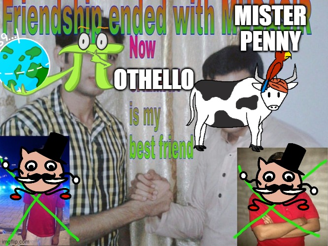

Solution: Kero
Written by Colin Lu
As mentioned in the preparation screen and cutscene text, this puzzle allows (and requires) the use of all of the legendary cards.
After experimenting with some combinations of the legendary cards, we will find that there are some extremely powerful combos involving two legendary cards. Furthermore, from reading the text, we can determine that there are six “waves” of enemies in total. This makes it natural to try to come up with six two-card combos to use the 12 legendary cards in.
There are some additional clues that can help narrow down where each card needs to be used: Slime and Moonick enable us to draw through most of the deck, which is most useful early on, and Mister Penny destroys our own bases, which would suggest it should be used last.
In addition to the legendary cards, across the battle, six small Creatures are needed in order to get enough Food to play the legendaries. Thus, an example 30-card deck could be:
- 13
- 1 of each other legendary (11 total)
- 2
- 2
- 2
With a deck like this, no special abilities of the non-legendary cards are needed, and there is some leeway for slightly sub-optimal play routes.
Legendaries used: 13 s and Non-legendaries used: 1
’s passive suggests summoning many Creatures will be useful in order to deal enough damage. After playing any small Creature (eg. ) on turn one, playing , followed by , will (very likely) fill the board with s and draw almost the entire deck. This gives two turns to attack with a full board, which will deal enough damage to defeat (with some Food left over to finish drawing the deck).
In order to gain more consistency in this phase, it’s helpful (although not necessary) to use the Cardinal Director mastery to ensure is in the starting hand. Note that the same general strategy will work with fewer than 13 s, but the probability of the combo whiffing and not filling the board with enough Slimes increases dramatically as the number of Slimes in the deck decreases.
Legendaries used: and
This stage only gives us two turns, which suggests that using a card that can enable attacks on the turn it’s summoned, namely . In fact, and can be used together to summon arbitrarily many copies of , by using the Flex of each newly summoned on , and then copying another . These copies of can then attack immediately at no cost.
On the first turn, we need to summon three small Creatures (eg. 2 , 1 ) to generate either Whipped Creams or Flowers, so that and can be summoned together on turn two.
Legendaries used: and
's text says "When this Creature deals Damage, it deals that amount of Damage to itself, and increases its Power by the same amount. reduces one instance of Damage to 0, since the smybol § gives the absolute difference between the next two values, and the next two symbols are the same.
have a huge amount of Health, suggesting exponential growth will be useful. On turn one, summon . On turn two, Summon and attack with , then use 's Special on and Attack with until is defeated.
s and
Legendaries used: and
The full board of enemies suggests a card that can attack multiple times such as will be useful. By using in combination with , can sweep through the entire board of s in one turn, and then defeat .
Legendaries used: and
are immune to most methods of dealing damage, but a “donated” can eliminate it. One additional small Creature (eg. ) is needed to help generate enough Food to play on turn two.
Legendaries used: and
’s ability requires us to do a very large amount of damage at once, which can help with.
After playing any small Creature on turn one (eg. ), we can summon on turn two, and on turn three by using ’s Flex. can then simply attack twice for the win.
Alternate Strategy

can be defeated by an alternate strategy, using to ramp out and on turn two to enable to attack immediately. Teams that do this will naturally attempt to finish the battle from this state.
After progressing through the other phases as in the above solution, we then have access to and to defeat . can be used to enable to attack twice on the turn after it is summoned, so we need some way to summon on turn four. By packing our deck with highly efficient ways to generate Food, this can barely be done, but requires using the minimum number of (so that more efficient Food generating Creatures can be added to the deck), and more specific plays during the other segments.
An example deck for this strategy:
- 8
- 1 of each other legendary (11 total)
- 2
- 2
- 1
- 2
- 2
- 1
- 1
This strategy has significant overlap with the "standard" approach, but does require more specific conditions to be met at various points, so an example full fight plan is below:
- Use Cardinal Director to ensure is in the starting hand.
- Restart until exactly one is in hand, as well as a or .
- Turn 1: Play or .
- Turn 2: Play .
- Turn 3: Play .
- Repeat the above steps until all eight are summoned onto the board. Making use of all three Instancers as well as the main puzzle can speed this part up.
- Turn 4, 5: Attack with all Creatures.
- Note that due to having fewer s, this setup does not draw the full deck, so occasionally a reset will be needed here (or at the start of the next wave), if the required cards are not in hand.
- Turn 1: Play in the middle column. Play anywhere. Play or anywhere (whichever one wasn't played on Turn 1 during .
- Turn 2: Create using and the last Creature played during Turn 1. Play with 1 Food left over. Use 's Flex 9 times (3 on each Base) to generate 9 Food. Play and (uses 8 Food, leaving 2 Food left over). Use 's Flex on . Attack with and the in the middle column.
- Turn 1: Play .
- Turn 2: Attack with and play .
- Turn 3+: Use 's Special on and attack with .
- s and
- Turn 1: Play .
- Turn 2: Play next to . Attack all of the s with , then attack .
- Turn 3: Attack with .
- Turn 1: Play in R4C2. Play in R4C3.
- Turn 2: Play . Use 's Flex on , moving it to R3C3. 's damage will destroy both and , giving a in hand.
- Turn 1: Play 2 and 1 (generated from the in the previous phase).
- Turn 2: Create with . Play . Use 2 Specials.
- Turn 3: Use 2 Specials. Create with . Play 2 and 1
- Turn 4: Create with 2 , 1 , 1 . Use 2 Special and 1 Special. Play .
- Turn 5: Use 's Special on . Attack with both and the copied .
This strategy can also work with some slight modifications, but requires similar tricks like using and to generate extra Food, and sacrificing after using it to generate Food in order to achieve more card efficiency.
In fact, it's possible to generate so much Food that it is possible to attack 3 times with , which is a fun challenge.
See solution:
- Bring an additional , replacing a , and use the instead of the against . This will leave an additional in hand.
- Against Kero, instead do the following:
- Turn 1: Play 2 and 1 .
- Turn 2: Create with . Play . Use 2 Specials.
- Turn 3: Use 2 Specials. Create with and . Play 2 , 1 , and 1 .
- Turn 4: Create with 2 , 2 . Use 2 Special and 1 Special. Play . Use Special on and attack with the copied .
- Turn 5: Use 's Special on . Attack with both and the copied .
Author’s Notes
Early on in the hunt writing process, there were various discussions about what to do as a “capstone” puzzle for this hunt, since a traditional meta wouldn’t be possible (since the card battles don’t have answers). I came up with this “final battle” requiring cards obtained over the course of the hunt as an alternative. I thought that allowing players to execute really "broken" combos would feel like an epic conclusion to the hunt.
Since some of the combos would trivialize other puzzles, I added the restriction that players can only use one legendary card in their deck outside of this final battle.
An earlier version of this puzzle had a version of with much more Health, since the combo intended to be used for that part can deal arbitrary amounts of damage. However, I lowered its Health so that players wouldn't have to press as many buttons to repeatedly execute the combo. This enabled the alternative solution with , , and . I decided to keep this in, because in testing it enabled teams to see through to the end of the puzzle, at which point they saw the + combo for , and then deduced that they should use and instead for .
I was a little surprised that some teams pushed through and made the Alternate Strategy above work, but it seemed that teams that opted for this approach really enjoyed executing the Alternate Strategy, so I'm glad it was available to them.
Fans of Magic: The Gathering might notice that some of the card combinations and effects are quite similar to some well known MTG combos. In particular, the + combination is similar to the combo (with , or a similar card), and the + combination was inspired by MTG’s “ripple” mechanic. An earlier concept for was similar to .
Lastly, I really want to thank DD for her work on the animations and art for this puzzle, which really brought it to life.